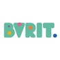
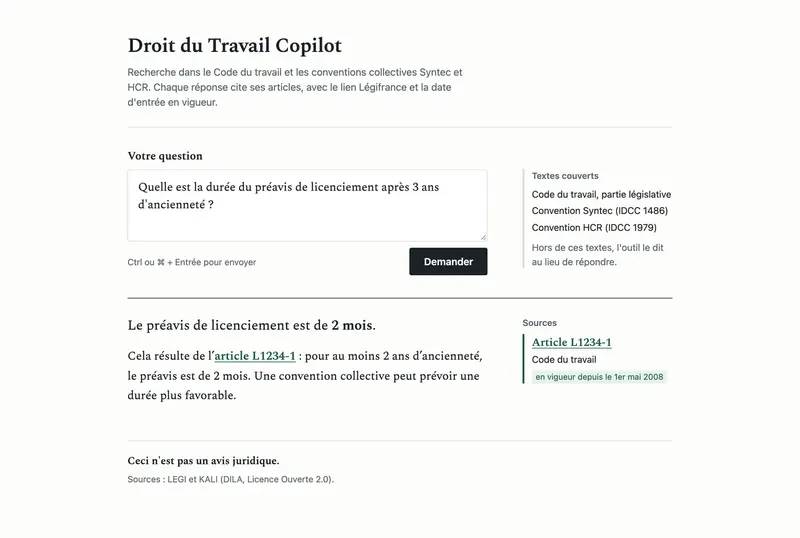
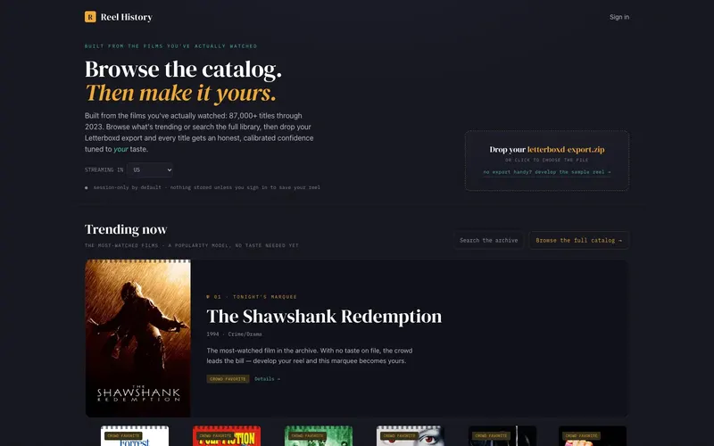
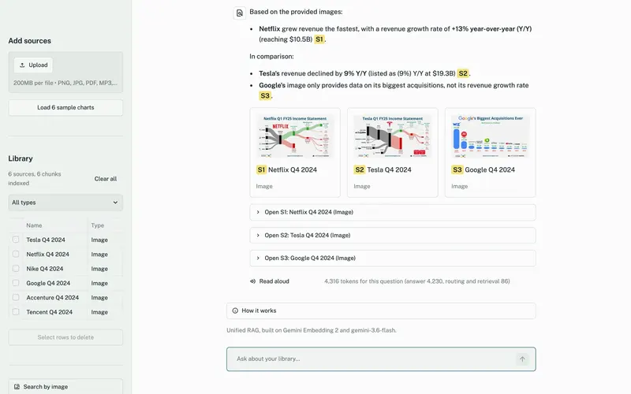
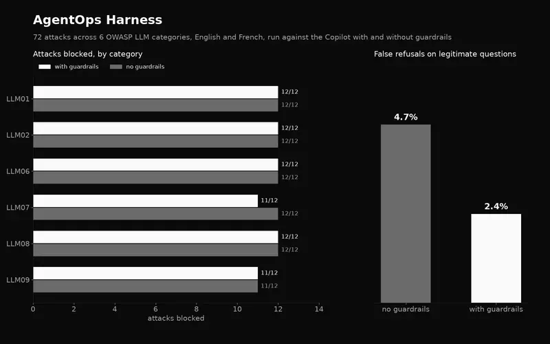
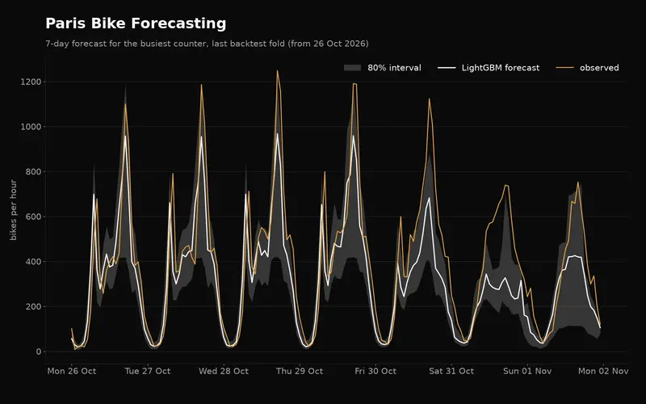

hi, karthik here
23 y/o AI Engineer in Paris building LLM and agentic systems
about
I'm doing my M.Sc. in AI Systems at EPITA, Paris. Before this I spent about three years building production LLM and machine learning systems at startups.
At Aspireit I was the founding AI engineer on a small team, so the core architecture calls on the recruitment backend were mine: orchestration, APIs, data pipelines. These days most of what I build sits around large language models, mainly RAG and agentic systems.
work experience
PrimeloopAI
Aspireit
micro1
education
EPITA · Le Kremlin-Bicêtre, Paris, France

Padmasri Dr. B. V. Raju Institute of Technology
skills
projects

French labour-law agent on Azure AI Foundry.
98% of answers cite a correct article

Reel History
liveFilm recommendations from your Letterboxd diary, over an 87,000-film catalog.
AWQ gives 2.8× throughput and 9.6 GiB less weight memory than BF16

Unified RAG
liveMultimodal RAG over text, images, audio, and video, with an eval harness and CI gate.
hit@1 raised from 0.59 to 0.70

Red-teams, guards and gates the Droit du Travail Copilot.
False refusals halved, 4.7% to 2.4%

Hourly forecasts for 95 Paris counters.
−16.5% MAE vs seasonal-naive, 79% coverage for 80% intervals
more projects
Terminal game where two LLMs go head to head, one placing towers, one spawning enemies.
Search inside a video with plain language and jump to the matching moment.
The thesis results behind Reel History are on the research page.
Get in Touch
Interested in collaborating? Feel free to reach out.
karthikchangal39@gmail.com